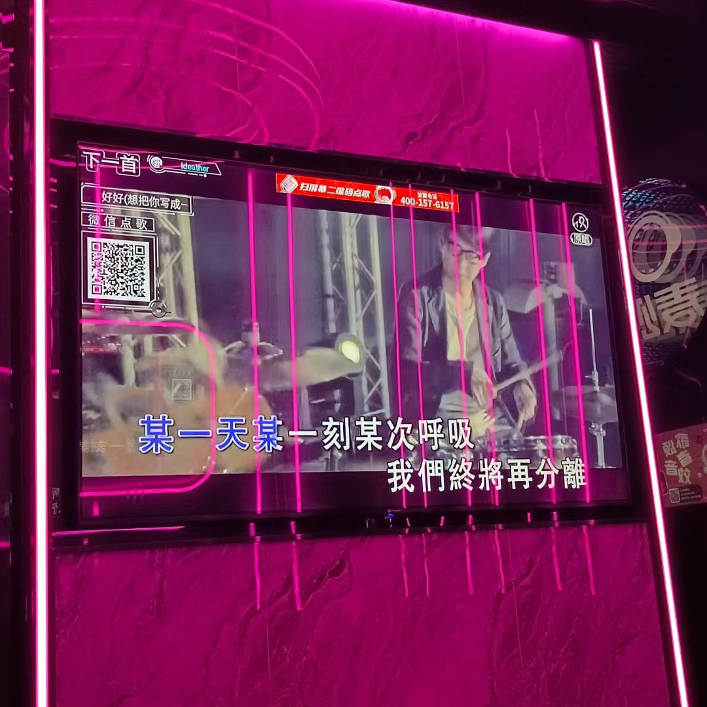

你好我是一个苹果
期待很久的超长暑假是如何度过的02
居家篇
去了高三一直没时间去的美术馆和野生动物园
高三特别不想上学的时候总是安慰自己，过了这一周周末就出去玩。规划了很多次但是从没实现，于是高
考结束后不久，我就实行了当时的计划。我先和朋友去了野生动物园，我们都很期待看到在路上随意走动
而不是关在笼子里的动物。去之前我们买了很多白菜、小西红柿和花生之类的喂动物，不过很遗憾动物们
不喜欢吃花生，于是花生被我朋友拿回家吃了。
这一次和我一起玩的两位朋友都特别会拍照，我们狠狠出片了一把。
后面有一天又突然临时起意一个人去了中国美术馆，当时正好有工笔画展览
和中韩水墨画展览。第一次看到韩国风格的水墨画，很现代很独特。

之后还去逛了一家自习室书店，里面有很多有创意的小书和装饰品。
最后去吃了一直很想去的日式锅，味道很不错
干点乱七八糟的小事情
时隔多年再次进入ktv

偶遇小猫、制作小猫
第一次尝试做木工，因为工具很难用，做的有点失败。我朋友的评价如下

看了一些书、一些韩剧